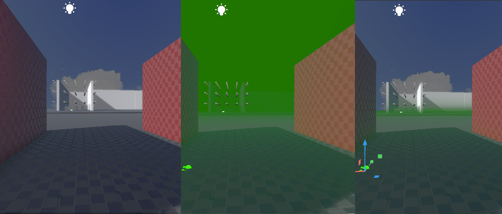

Fog
By default a scene doesn't have any fog. To enable fog, you need to place a game object in the scene and attach a fog component.
Fog Component
The fog component is used to apply simple depth-fog to the entire scene. The image below shows a scene without fog (left) with depth-fog (middle) and with an additional height-falloff (right):

The rotation and scale of the game object has no effect on the fog. The position is mostly irrelevant, except for the z-coordinate, which is used as the threshold if HeightFalloff is used.
-
Color: The overall color of the fog.
-
Density: The density of the fog. The higher this value, the thicker the fog will be and thus it will also become noticeable at a closer distance.
-
HeightFalloff: If set to zero, the fog is applied equally everywhere in the scene. Otherwise, the fog will only be applied to objects below the fog object. Thus, in this case, the position of the fog object defines which objects will be inside the fog and which are outside. The HeightFalloff value defines the distance over which the height fog transitions from foggy ground to clear sky. For example, a value of
1means the fog changes from fully foggy to non-foggy over one meter and thus gives a relatively sharp transition. A value of10results in a much larger and softer transition.